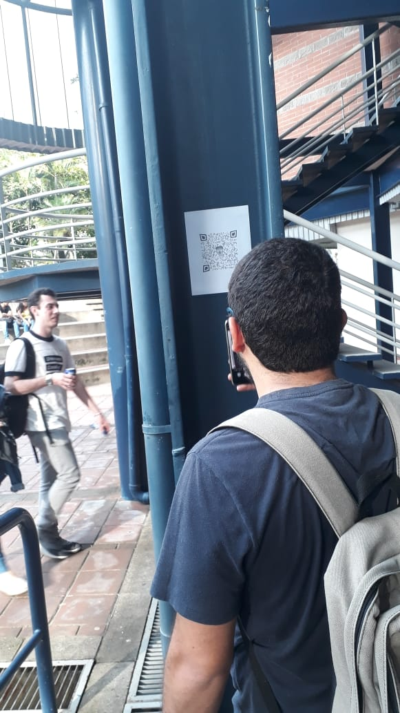
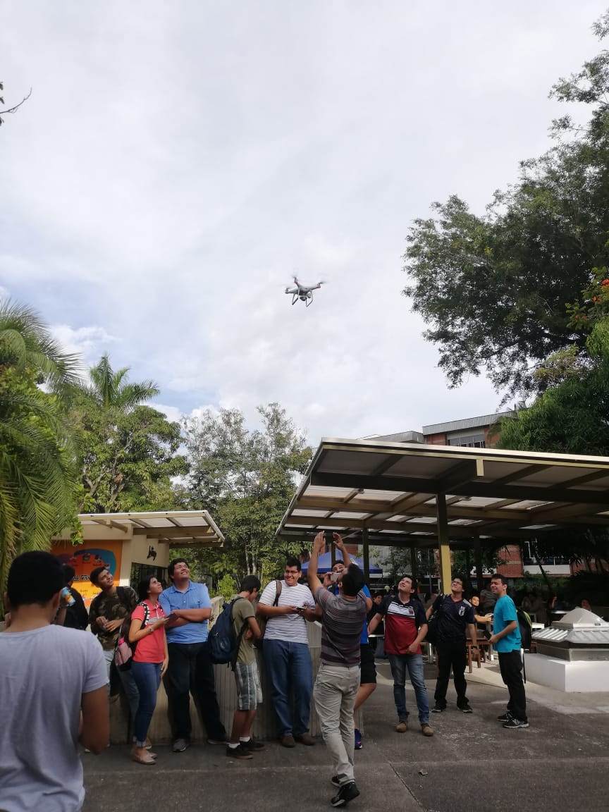

Una vision perversa
La actividad se baso en un laboratorio de la materia Administracion base de datos.Era un juego en el cual debiamos evitar la destruccion de la UCA. El objetivo era poder realizar ejercicios del tema de triggers en SQL.
La actividad duro una semana en la cual cada dia era un ejercicio diferente, al resolver cada ejercicio un personaje llamado Kurt nos daba pistas acerca de un nuevo ejercicio y asi avanzabamos en el plan de detener la destruccion de la Uca a manos de Ale Rav.
Las pistas consistian en codigo QR, los cuales nos dirigian a mensajes de Kurt con los ejercicios propuestos del laboratorio.
Lunes
La primera pista nos fue presentada en la clase de Programacion Web, el dia lunes, este dia al finalizar la clase, se nos mostro un video y un audio, los cuales nos contaban de los planes de Ale Rav y como este queria destruir a Uca.
Se nos introduce por primera vez a Kurt el personajes que mediante ejercicios y pistas, se nos muestra el primer codigo QR, y este nos dirige a la primera pagina de ehterpad, en la cual se nos introduce al juego, y las indicaciones del primer ejercicio.
Lo primero que se hizo para resolver los problemas fue ingresar a la pagina https://dei2.uca.edu.sv/phppgadmin con las credencias del carnet estudiantil.
EL ejercicio cosistia en validar el DUI de las personas de la tabla miembros. Se validaba la expresion regular del DUI(10 caracteres y en la posicion 9 un guion) se debian efectuar las operaciones mensionadas en la pagina https://etherpad.net/p/r.b0894134ffcbb8ee6a03,
al hacer esto se creaba una funcion, en la cual se evaluavan los valores predefinidos, al realizar el ejercicio se activaba un trigger interno de la base de datos que nos decia que debiamos revisar la tabla kurt_out en la fila 1.En esta oagina nos deja un link de finalizacion en el cual nos da la pista siguiente la cual era un acertijo.El cual al resolverlo nos dice que vayamos al polideportivo, en donde estaba el siguiente codigo QR
Martes
Luego de conseguir la segunda pista, la cual se encontraba en el poli se procede a analizar el codigo QR el cual nos manda a otro Url de etherpad en el cual Kurt nos explica como avanza el plan de Ale Rav y el de él.
Tambien nos deja las indicaciones del segundo ejercicio de Administracion de base de datos.
Este ejercicio consistia en realizar dos triggers, en los cuales se debia revisar que los miembros representantes de un departamento, no debian pertenecer a otro departamento, y que esto se debia revisar a la hora de hacer insert o actualizaciones en la tabla.Tambien se debia de revisar si un miembro se movia de un departamento a otro este trigger debia revisar si el miembro que se iba a mover no estaba de representante en el departamento, sino esto deberia de dar error.
Al resolver el ejercicio, Kurt nos dice que la siguiente pista se presentara en el atrio que esta debajo de las Aulas D, en el cual se estaba pintando un mural, y que la persona encargada de realizarlo nos daria la siguiente pista.
La cual era un codigo QR que estaba impreso y pegado en una de las columnas.
Miercoles
Despues de escanear el codigo QR, este nos manda a otro Url de etherpad, en el cual Kurt nos deja las indicaciones del siguiente ejercicio, y nos cuenta de como se va desarrolando la historia dentro del "juego".
Este ejercicio consistia en realizar un trigger y una funcion, en la cual el trigger era cuando se introdujera un miembro que su atributo de denominacion_departamento corresponda a la tabla de la subclase a la que pertenecia su DUI(ingenieria,ventas,gestion), y que si no estaba en ninguna introducirlo automaticamente en alguna de estas tablas.
La funcion consistia en que cuando se actualizaba la denominacion_departamento del miembro, la funcion eliminaba de la tabla a la que pertenecia y luego lo añadia a la tabla a la que se ha movido.
Luego se nos dice que nos presentemos a la clase de Base de datos, en la cual Carlos nos ayudo a hacer el ejercicio, ya que debido a cuestiones de tiempo no lo pude realizar.
Luego de que nos enseñara como se debia de hacer el ejercicio nos dice que nos presentemos a la clase de Programacion Web del dia jueves, la cual era a las 3:30 PM.



Jueves
En este punto del juego, nos presentamos a la clase de Programacion Web, luego de unos minutos Carlos nos dice que salgamos a la terraza, en la cual un dron llega con el codigo QR de la siguiente pista amarrado en una de sus patas.
Nestor agarra el dron y agarra el codigo QR para que toda la clase lo escanée.
Este codigo nuevamente nos manda a un Url, en el cual Kurt nos explica de como la situacion se va agravando y de que necesita ayuda, por eso mismo nos deja indicaciones de como resolver el siguiente ejercicio, para asi poder lograr resolver el misterio de quien es Ale Rav.

Viernes
Para el viernes no logre hacer el ejercicio que Kurt nos habia dejado, por el hecho de que tenia parcial de calculo 3 y habia estudiado el dia anterior, por suerte en la mañana, Carlos mando un correo electronico en cual decia que asistieramos a la Magna V a las 5:00PM.
En la magna se hiso una presentacion del final, en la cual Kurt(instructor de abd), nos explica que logro detener el plan de Ale Rav. Kurt en ese momento iba a revelar la verdadera identidad de Ale Rav(Algo que todos sabian desde el lunes que era Erick Varela), cuando misteriosamente colapso.
Al momento de colapsar solto unos papeles, los cuales contenian codigos QR, que tenian el Url en donde Kurt nos decia que si el llegaba a morir, cosa que ya habia pasado, nos tenia un video preparado donde nos revelava la verdadera identidad de Ale Rav.
En este video se logro comprobar, que aunque Kurt logro detener el ataque de Ale Rav y le habia costado la vida, que Ale Rav en realidad era Erick Varela.